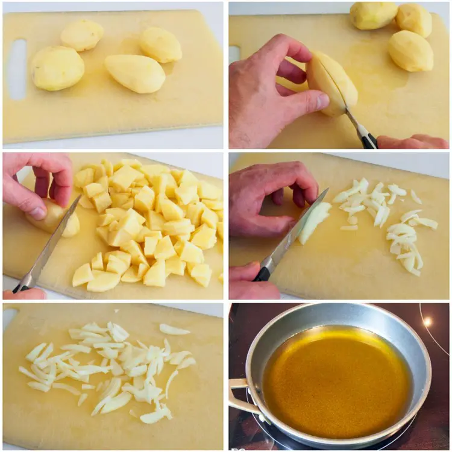
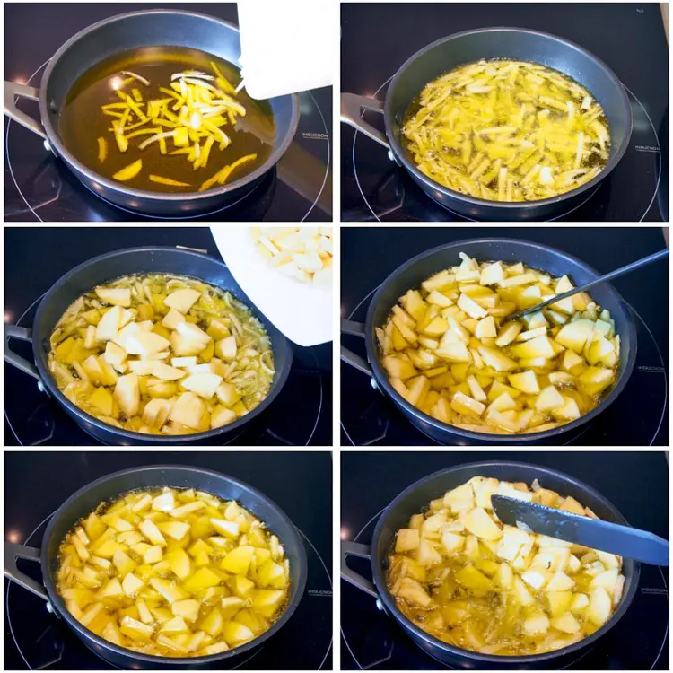
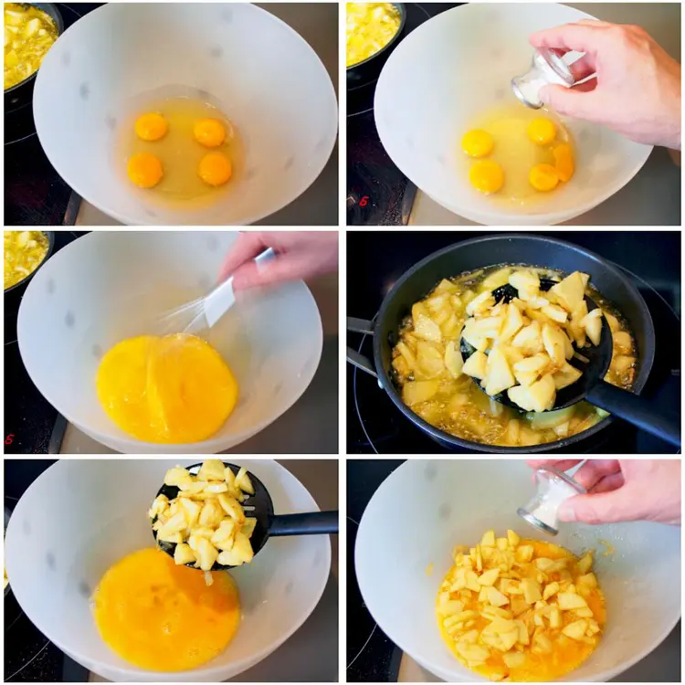
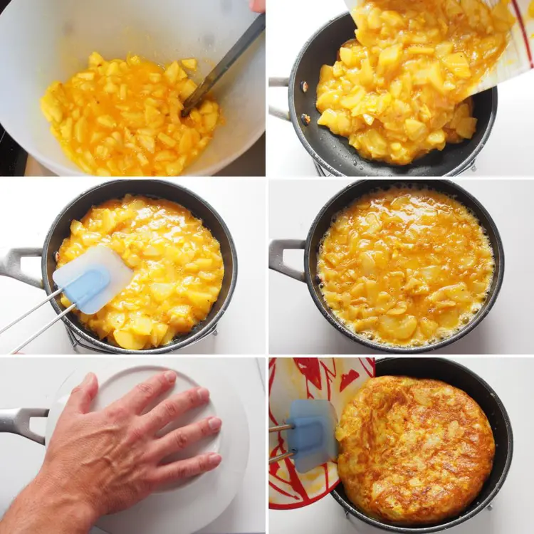
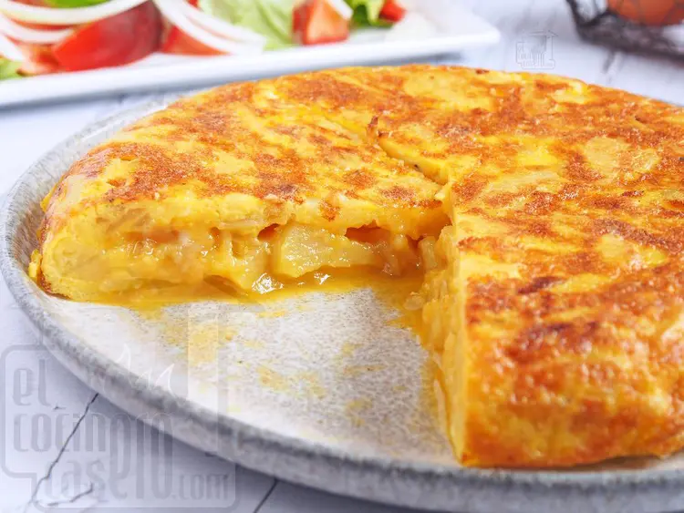

Volver al menu principal
Ingredientes
Paso a Paso
Resultado Final
Ingredientes
- 2 huevos
- 2 patatas
- 1 cebolla
- Aceite de oliva virgen extra
- Sal
- Pimienta negra
Paso a Paso
- En esta receta vamos a preparar una tortilla de patatas con cebolla, así que lo primero que haremos será pelar las patatas y limpiar las cebollas. Cortamos las patatas en trozos del mismo tamaño para que la cocción de las patatas sea lo más uniforme posible y las reservamos. Con la cebolla limpia y pelada, la vamos a cortar al gusto, nosotros normalmente la cortamos en medias lunas y en trozos no muy largos. Cuando tengamos todos los ingredientes listos de la tortilla de patatas, ponemos una sartén a fuego medio con abundante aceite de oliva virgen extra.

- Cuando el aceite de la sartén empiece a coger temperatura, incorporamos la cebolla y esperamos unos dos minutos a que empiece a dorarse y a que el aceite vuelva a coger temperatura. Al cocinar la cebolla antes de añadir las patatas, le daremos una pequeña cocción y evitaremos que nos quede la cebolla cruda. Pasados los dos minutos o si vemos que la cebolla empieza a dorarse, vamos a añadir las patatas poco a poco con cuidado de que no salpique el aceite.

- Mientras se fríen las patatas, vamos a cascar los huevos en un bol y les añadimos un poco de sal. Batimos los huevos y reservamos. Después de unos 8-12 minutos con el fuego medio-fuerte y removiendo de vez en cuando, las patatas ya estarán cocinadas y tendrán un tono dorado. En ese momento vamos retirando las patatas con una espumadera, procurando escurrir el máximo de aceite, y las vertemos en el bol donde están los huevos batidos. Cuando tengamos todas las patatas en el bol, añadimos la sal que le corresponden a las patatas y removemos para integrar todos los ingredientes de la tortilla.

- Para hacer la tortilla de patatas vamos a utilizar la misma sartén en la que cocinamos las patatas. Colamos y guardamos el aceite que hemos utilizado y ponemos la sartén a fuego medio con un poco de aceite de oliva virgen extra. Cuando el aceite esté caliente, vertemos la mezcla de la tortilla en la sartén y repartimos la mezcla con una espátula. Cuando la superficie empiece a cuajarse y los bordes de la tortilla a separarse de la sartén (2 o 3 minutos dependiendo del fuego), con la ayuda de un plato, damos la vuelta a la tortilla de patatas con un giro rápido. La echamos de nuevo a la sartén para que se cuaje por el otro lado. Con la ayuda de una espátula o espumadera, le vamos dando forma por los bordes y cuando esté cuajada (en 1 o 2 minutos) con la ayuda del mismo plato le damos otra vez la vuelta y ya estaría lista.
En este paso y dependiendo de si nos gusta la tortilla de patatas más o menos cuajada, prolongaremos la cocción y le iremos dando las vueltas necesarias hasta que la tengamos en nuestro punto de cocción preferido.

- Podemos acompañar la tortilla de patatas de una buena ensalada mixta. Además, también la podemos utilizar para hacer bocadillos o para poner un aperitivo cortada en taquitos.
Como se ve en la foto a nosotros nos gusta la tortilla poco cuajada, que quede jugosa por dentro, pero si os gusta la tortilla más cuajada, como dijimos en el paso anterior, le daremos otra vuelta más prolongando el tiempo de cocción.
Resultado Final
